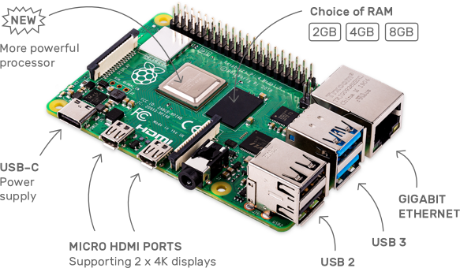
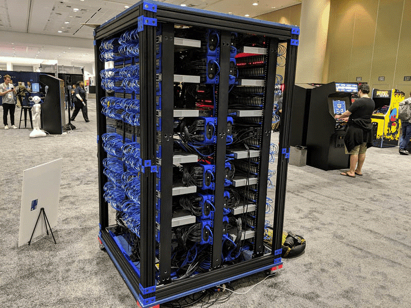
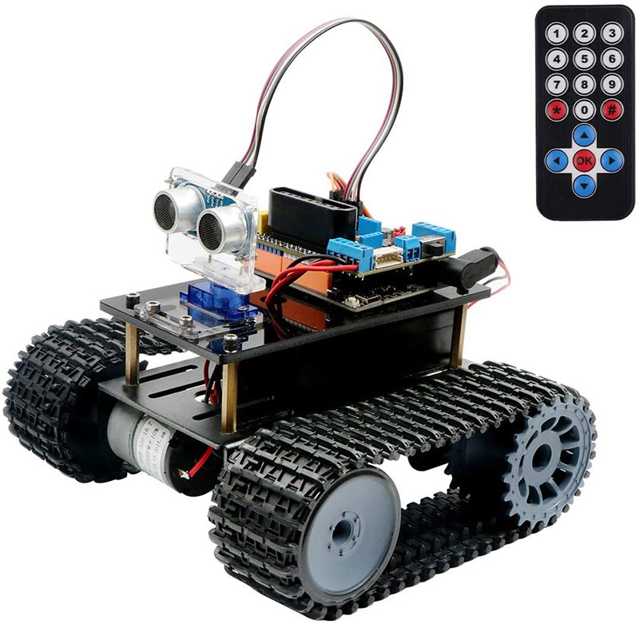
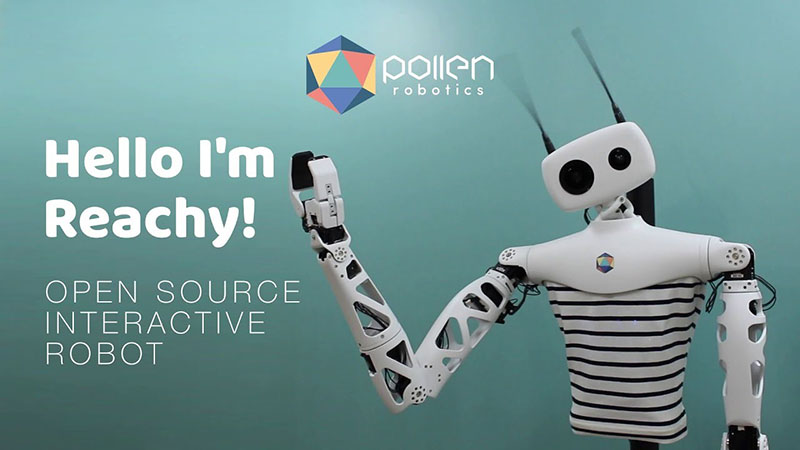

Raspberry Pi – почему он стал таким популярным? Кейсы его реального применения.
Что собой представляет Raspberry Pi?
Raspberry Pi – одноплатный компьютер, который может целиком уместиться на ладони. Изначально «малиновый пирог» был разработан в Raspberry Pi Foundation как недорогая платформа для обучения информатике. Большая часть моделей Raspberry Pi выполнены на четырёхслойной печатной плате размером с пластиковую карту и не требуют сборки, так как все элементы компьютера, включая процессор в виде BGA-микросхемы, уже впаяны в системную плату. Соответственно, у данного вида компьютеров нет иной возможности модернизации, кроме как добавления немногочисленных адаптеров и подключения usb-устройств, расширяющих его функционал, или увеличивающих возможности системы. Например, к Paspberry Pi таким образом можно добавить Bluetooth-модуль, WI-FI-модем, увеличить объём оперативной памяти с помощью ReadyBoost – программной технологии Microsoft, позволяющей увеличить быстродействие компьютера за счет памяти подключаемого флеш-накопителя.
Краткая история
Raspberry разрабатывается Фондом Raspberry Pi Foundation - это благотворительной организации, основанной в 2009 году для содействия изучению основ информатики в школа
Первая модель, собранная на плате однокристальной системы Broadcom, вышла в 2011 году в виде прототипа, и уже спустя год 10 000-м «тиражом» разошлась среди компьютерщиков-энтузиастов. Выпуск финальной версии модели Raspberry Pi B начался в феврале 2012 г. Цена на момент релиза составляла $35, а спустя год, в феврале 2013 г., состоялась презентация Raspberry Pi A стоимостью $20 – процесс производства был удешевлён и оптимизирован под массовый выпуск.
С 2012 по 2015 годы вышли Raspberry Pi «B», Raspberry Pi «B+», Raspberry Pi «2 model B»
В ноябре 2015 г. и феврале 2017 г. разработчики проекта создали «Облегченные» версии – Zero и Zero W. Основные их отличия – цена в 5 и 10 долларов соответственно и несмонтированный разъём GPIO.
С 2016 по 2018 годы вышли Raspberry Pi 3, Raspberry Pi Zero W, Raspberry Pi 3B+. Главное отличие моделей третьего поколения – наличие Wi-FI, Bluetooth, Ethernet (в последней модели его скорость может достигать 1Гбит в секунду), более мощные 64-битные процессоры
В конце июня 2019 г. был выпущен Raspberry Pi 4. Новинка получила полное обновление основных компонентов, включая процессор, память и интерфейсы, но сохранила старую цену – $35 (63 - в максимальной комплектации).
Рисунок 1. Raspberry Pi 4 Model B
ОС для одноплатного ПК
Изначально Raspberry Pi был разработан с расчётом на то, что будет работать под ОС Linux – это делало его более универсальным, но в 2015 году Raspbian официально представила Raspberry Pi Foundation как основную ОС для своих компьютеров. Raspbian OS оптимизирована для низкопроизводительных процессоров ARM, которые ставятся на последнюю модель - Raspberry Pi4 .
Вообще, на практике на Papberry Pi (не позднее третьей версии) хорошо работают следующие ОС:
- OSMC (Open Source Media Center) — лучшее, наиболее функциональное мультимедийное программное обеспечение о открытым программным кодом.
- ARCHLINUX– её специальная версия для Raspberry Pi. ОС является независимым дистрибутивом GNU/Linux общего назначения.
- PI MUSICBOX– это дистрибутив, основанный на Mopidy Music Steraming Server. Является автономным потоковым музыкальным проигрывателем для Spotify, Google Music, SoundCloud, Webradio, подкастов и другой музыки из облака.
- RETROPIE– позволяет превратить малиновый компьютер в игровую приставку для ретро-игр
- OPENMEDIAVAULT– превращает компьютер в машину для управления сервером, хранящем данные на файловом уровне
- RISK OS– ОС, разработчиками которой являются инженеры компании, которая разработала первый процессор с архитектурой ARM.
- Windows 10 ARM WOA Deployer, который устанавливает ARM-версию Windows 10 на microSD. Идея плохая, так как карте памяти даже последнего - 10 класса, будет не хватать скорости записи и чтения. Система будет работать стабильно с microSD со скоростью записи не менее 60 Мб/с, чтения – не менее 100 Мб/с
- Android– различные сборки
Ответим на вопрос: «Почему Raspberry PC так популярен?»
Популярность и продолжающийся успех Raspberry Pi обусловлены его доступной ценой и невероятным сообществом.
Эбен Аптон – один из создателей одноплатного компьютера, при создании этого ПК поставил задачу сделать недорогое, прочное (чтобы его можно было доставать из портфеля без защитного корпуса тысячи раз) устройство, которое поможет всем обучаться программированию (главный покупатель всё же школьник или подросток – идея создать такой ПК возникла у его создателей из-за недонабора студентов на оксфордские курсы по программированию и алгоритмам). Всего за 25 долларов он компьютер привлек огромный круг пользователей - от школьников до профессиональных программистов. На сегодняшний день выпущено уже 30 млн Raspberry Pi всех моделей.
Применения, которые можно найти Raspberry Pi
#Сделать кластер из компьютеров Raspberry Pi
В последние годы кластеры занимают нишу как в сфере распределённых вычислений (в основном начных), так и в сфере веб-сервисов – там, где нужно на огромное количество запросов отвечать ежесекундно.
В части распределённых вычислений есть несколько популярных решений:
- MPI (Message Passing Interface) – стандарт взаимодействия между процессами, которые могут выполняться на разных узлах кластера. На разных узлах выполняются разные программы, но задача их взаимодействия, обмена данными решается проще за счёт стандарта MPI
- MOSIX (Cluster Management System) – дистрибутив с пропатченным ядром Линукс. Программы не нуждаются в перекомпиляции, а по кластеру могут мигрировать запущенные процессы, причём это происходит в автоматическом режиме. Цель миграции – найти узлы, которые имеют большую производительность и меньшую нагрузку.
Сегодня собрать микро-версию суперкомпьютера может каждый. Уже готовые сборки (микросхемы со стойками и системами охлаждения) продаются на том же Алиэкспресс. ПО находится в открытом доступе и бесплатно. Для управления кластером из мини-ПК часто используются специальные сборки Линукс.
Самый большой в мире суперкомпьютер из более тысячи Raspberry Pi 3 B+ в 2019 представила Oracle – компания-разработчик программного обеспечения. В качестве ОС в ход пошла сборка Oracle Autonomous Linux.
Рисунок 2. Суперкомпьютер на Raspberry от Oracle
Компьютеры обменивались между собой данными по LAN-портам. Для коммуникации задействовали 48-портовые сетевые концентраторы Ubiquiti. Для обеспечения установки энергией использовались специально разработанные БП.
Практическое применение установки компанией пока не планируется. Для Oracle интерес был только в самом процессе сборки – никто до них не собирал проект на Paspberry Pi таких масштабов, поэтому компании пришлось разрабатывать все аппаратные решения с нуля.
#Сделать робота под управлением мини-компьютера
Выбор аппаратно-программных средств для построения систем автоматики и робототехники зависит от нескольких факторов, в том числе и от масштабов проекта. Raspberry Pi очень удобно использовать как управляющее устройство для роботов – у него уже есть встроенный модуль Wi-Fi, а вся аппаратная часть робота будет связываться с ним по USB. Интерфейсы для управления роботами уже написаны, остаётся только их установить. Тем не менее, для небольших роботов без сложных интерфейсов более выгодно использовать Arduino.
Рисунок 3. Робот Keywish Panther-Tank для проекта Arduino
Один из самых интересных роботов - робот на базе Raspberry Pi 4, решающий задачи манипулирования и обслуживания. Он был создан французской робототехнической компанией Pollen Robotics и уже находится в продаже.
Рисунок 4. Робот Rachy